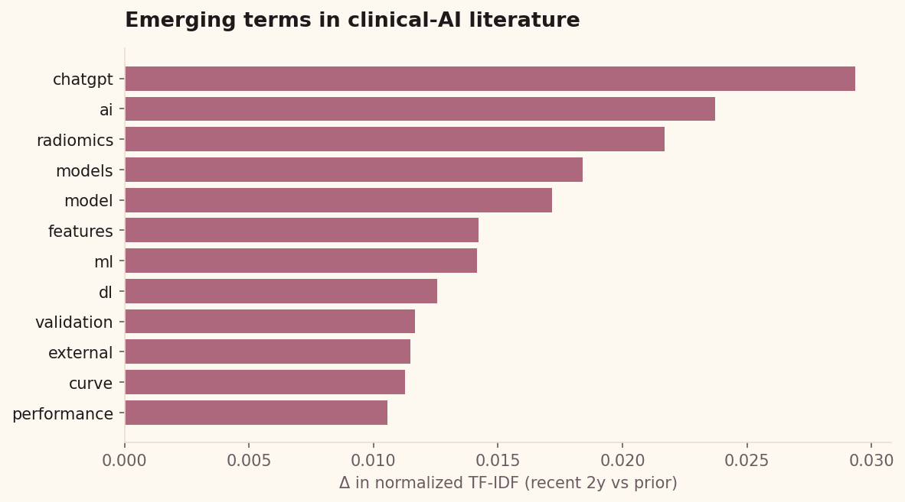
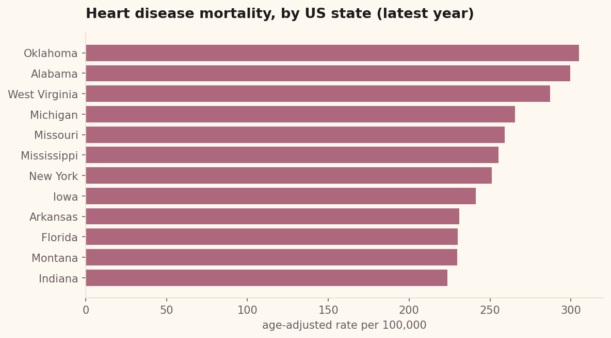
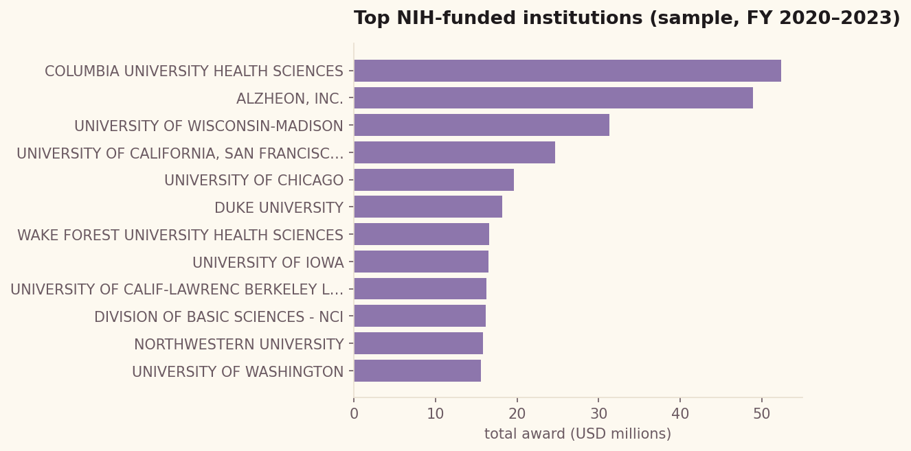
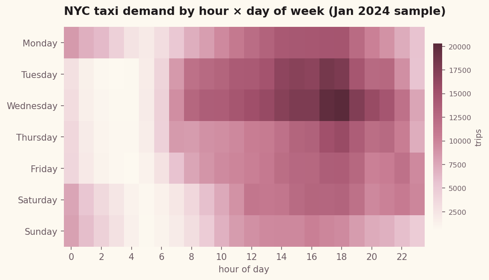
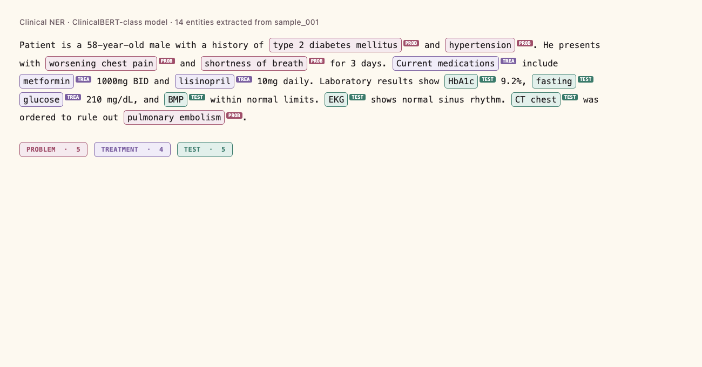
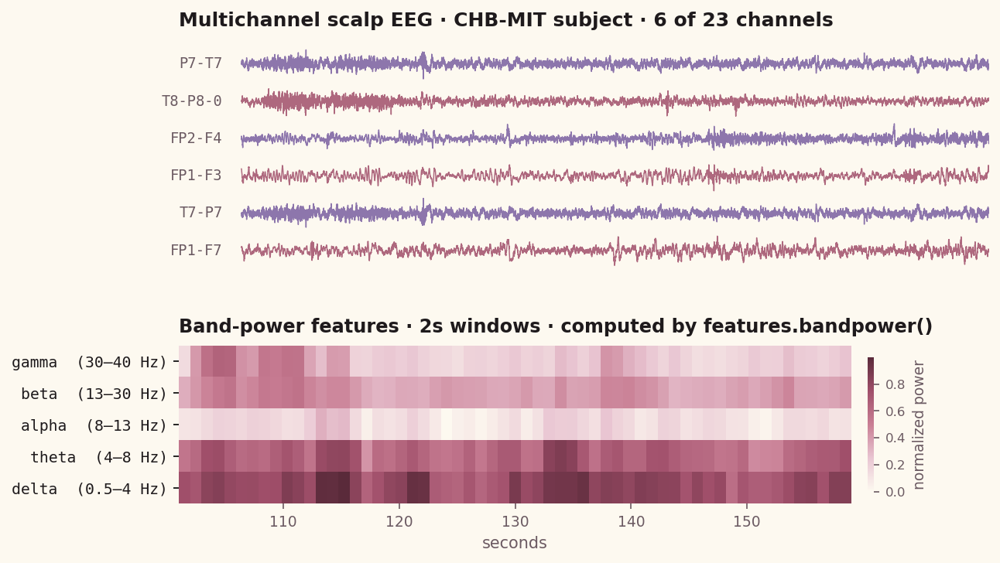

// biomedical ai researcher
Building AI systems at the intersection of neuroimaging, surgical robotics, and clinical data science. Graduating GWU December 2026.
01 — about
I'm a Health Data Science senior at George Washington University's Milken Institute School of Public Health, working at the intersection of machine learning, clinical neuroscience, and medical imaging.
My research spans pediatric neuroimaging pipelines, real-time seizure detection, and brain tumor segmentation — all with the goal of improving clinical decision-making through better AI tools.
I'm currently a research intern at Children's National Hospital, where I build automated preprocessing and segmentation pipelines for longitudinal sEEG and fMRI datasets.
02 — research experience
03 — projects
SQL pipelines, ETL, cloud warehousing, data cleaning




Clinical AI — fine-tuning, signal processing, segmentation, and hackathon builds


04 — skills
05 — contact